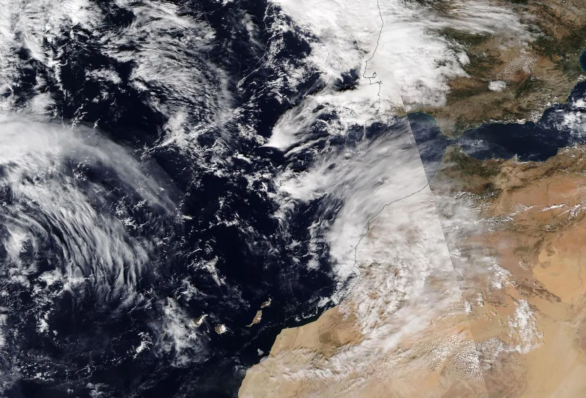
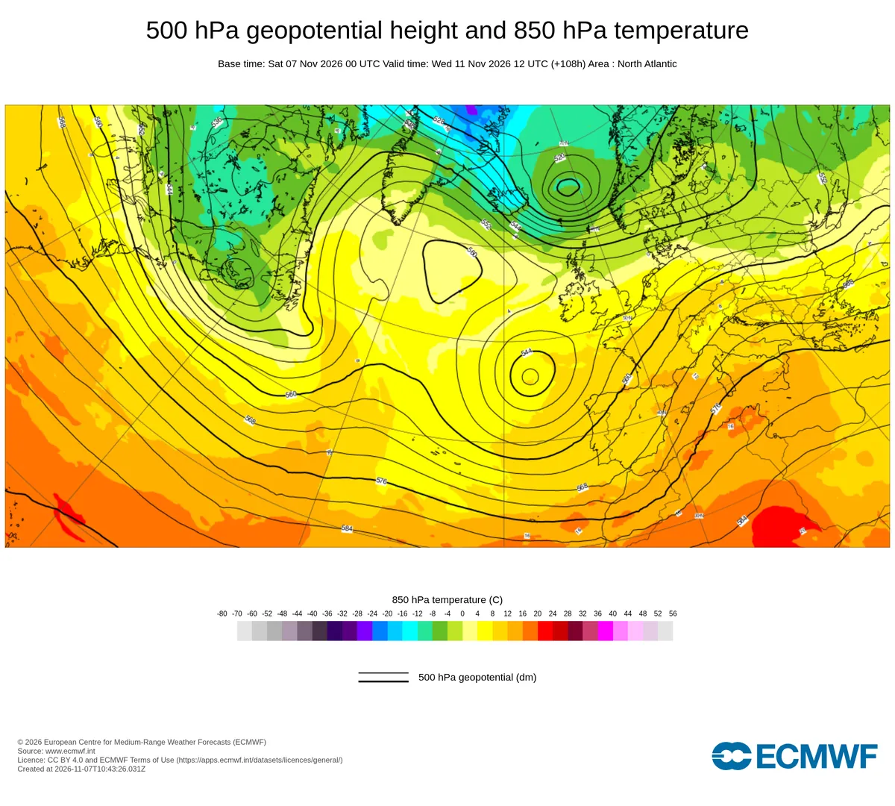

Rain is coming to the Atlas: why it will not fall as snow, except on the highest summits
A wet spell reaches the High Atlas from Sunday 8 November, with the heaviest rain on Wednesday 11 November. But the air coming from the south-west is so mild that the 0 °C level stays near 4,000 m: it will rain at Oukaïmeden and in the Ourika and Imlil valleys, and only the summits above about 3,700 m, such as Toubkal, should turn white.
See the live snow forecast for Toubkal in the SnowScope appSnow depth, powder alerts and the 3D map, free.
What is coming, day by day
Our forecast of 7 November gives about 65 mm of water on the summit of Toubkal (4,167 m) from 7 to 12 November: 10 mm on Sunday 8, 13 mm on Monday 9, 6 mm on Tuesday 10 and 35 mm on Wednesday 11, the main day. The slopes of Oukaïmeden (top lift 3,258 m) get about 15 mm, 9 mm of it on Wednesday; Imlil (1,740 m) about 10 mm. The wettest place is the Atlantic coast near Agadir, with 87 mm on Wednesday alone.
Two forecast models agree on the warmth but not on the timing. A second model gives Oukaïmeden about 30 mm from 8 to 13 November, with more rain on Thursday 12 and Friday 13. Even its coldest moment keeps the 0 °C level near 3,600 m, above the top of the resort.
Where the warm air comes from
Over the Atlantic west of Portugal, a pool of cold air high up is cut off from the main jet stream: meteorologists call it a cut-off low. Air turns anticlockwise around it, so on its eastern side the wind blows from the south-west, straight from the subtropical Atlantic towards Morocco. At about 3 km above the Atlas this wind reaches 89 km/h.
That air is warm for November: at about 1,500 m it is between 13 and 20 °C all week. It is also very moist. We estimated the flow of water vapour carried by the wind off Agadir: it peaks at about 860 kg of water per metre per second on Wednesday 11 November around noon. Above 250 meteorologists speak of an atmospheric river, above 750 of a strong one. Wednesday's rain is fed by a narrow river of moist air from the subtropics.

Why it falls as rain: the physics of the snow line
Air gets colder with height, by about 6.5 °C per kilometre in the standard atmosphere. In this moist air mass it cools a little more slowly: during the rainy hours we find about 14 °C at 1,500 m, about +4 °C at 3,100 m and about -2 °C at 4,400 m. The 0 °C level, where the air crosses freezing, sits between about 3,800 and 4,500 m, near 4,000 m on average.
Precipitation high in the clouds starts as snow. Flakes falling below the 0 °C level enter the melting layer; they need a few hundred metres of fall to melt completely, so the snow line, where snow turns to rain, lies about 300 m below the 0 °C level: here about 3,700 m. The top of Oukaïmeden is around 450 m lower than that.
Can evaporation save the snow? When the air is dry, falling flakes partly evaporate and cool the air around them (that is the wet-bulb temperature, always lower than the air temperature), which can push the snow line down by a few hundred metres. In this storm the air at mountain height is close to saturation, so this effect is small. The wet-bulb temperature at the summit of Toubkal stays below 0 °C, which is why the very top can still get snow.
Why the mountains get more rain than the valleys
When wind meets a mountain range it has to rise. Rising air expands and cools, its water vapour condenses, and slopes facing the wind receive more rain or snow than the plains: this is orographic lift. Here the south-west wind runs into the Atlantic side of the High Atlas, so the high ridge around Toubkal gets about 65 mm while Imlil, in a valley on the north side, gets about 10 mm.
The same lift that wrings water out of the air does not cool it enough to change rain into snow: the air arriving at the range is already too warm. Only the few summits above the snow line catch the snow.
What it means on the mountain
Our snow model keeps snow only on the highest summits: the deepest snow on the high ground around Toubkal grows from about 13 cm today to about 26 cm by Wednesday 11 November, while the snow-covered area of the Atlas is small (about 80 km² today). Oukaïmeden stays without snow, and rain will wash away any old patches.
Heavy rain on steep, bare slopes runs off fast. In valleys such as the Ourika, rivers can rise within hours during intense rain: follow the official warnings of the national weather service, avoid camping or parking near riverbeds, and do not cross a flooded track. Forecasts change; we will update the snow map every day.

What it means for you
- No skiing yet at Oukaïmeden: the snow line stays near 3,700 m, well above the top lift.
- Hikers going up Toubkal around Wednesday 11 November: expect rain in the valley, wet snow and strong south-west wind near the top, and poor visibility.
- In the Ourika and Imlil valleys, stay away from riverbeds during heavy rain and follow the official weather warnings.
- Check the live snow map before you go: the timing of the rain still differs between forecasts.
More maps (external sites)
References and credits
- Minder, J. R., Durran, D. R. and Roe, G. H. (2011). Mesoscale controls on the mountainside snow line. Journal of the Atmospheric Sciences 68, 2107-2127. doi.org/10.1175/JAS-D-10-05006.1
- Roe, G. H. (2005). Orographic precipitation. Annual Review of Earth and Planetary Sciences 33, 645-671. doi.org/10.1146/annurev.earth.33.092203.122541
- Ralph, F. M., Dettinger, M. D., Cairns, M. M., Galarneau, T. J. and Eylander, J. (2018). Defining 'atmospheric river': how the Glossary of Meteorology helped resolve a debate. Bulletin of the American Meteorological Society 99, 837-839. doi.org/10.1175/BAMS-D-17-0157.1
- Ralph, F. M., Rutz, J. J., Cordeira, J. M., Dettinger, M. D. et al. (2019). A scale to characterize the strength and impacts of atmospheric rivers. Bulletin of the American Meteorological Society 100, 269-289. doi.org/10.1175/BAMS-D-18-0023.1
- Marchane, A., Jarlan, L., Hanich, L., Boudhar, A., Gascoin, S. et al. (2015). Assessment of daily MODIS snow cover products to monitor snow cover dynamics over the Moroccan Atlas mountain range. Remote Sensing of Environment 160, 72-86. doi.org/10.1016/j.rse.2015.01.002
- NOAA, NASA, US Air Force (1976). U.S. Standard Atmosphere, 1976. NASA-TM-X-74335. ntrs.nasa.gov/citations/19770009539
- Wallace, J. M. and Hobbs, P. V. (2006). Atmospheric Science: An Introductory Survey, 2nd edition. Academic Press / Elsevier. ISBN 978-0-12-732951-2.
- American Meteorological Society, Glossary of Meteorology: 'Freezing level'. glossary.ametsoc.org/wiki/Freezing_level
- American Meteorological Society, Glossary of Meteorology: 'Melting layer'. glossary.ametsoc.org/wiki/Melting_layer
- American Meteorological Society, Glossary of Meteorology: 'Wet-bulb temperature'. glossary.ametsoc.org/wiki/Wet-bulb_temperature
- American Meteorological Society, Glossary of Meteorology: 'Cutoff low'. glossary.ametsoc.org/wiki/Cutoff_low
- Forecast data: Open-Meteo.com (CC BY 4.0) from the ECMWF IFS (CC BY 4.0) and DWD ICON models, run of 7 November 2026; snow depth: SnowScope snow model; chart: ECMWF open charts (CC BY 4.0); satellite image: NASA Worldview / NASA EOSDIS. open-meteo.com/
About these numbers
Numbers: forecasts of 7 November 2026 for 7 to 12 November (precipitation, temperature and wind at several heights at the summit of Toubkal, the top of Oukaïmeden, Imlil and the coast near Agadir), with a second model for comparison. We computed the 0 °C level from the temperature profile and took the snow line about 300 m below it; the moisture flow is estimated from wind, temperature and humidity at eight heights. Snow depth comes from the SnowScope snow model (an estimate for an area). Forecasts change.
Cite this report
For research, teaching or the press: the numbers and charts are free to reuse under CC BY 4.0 with this citation.
SnowScope (2026), Rain is coming to the Atlas: why it will not fall as snow, except on the highest summits, https://snowscope.app/blog/en/2026/11/atlas-rain-not-snow-physics-7-november-2026.html, accessed 2026-11-07
SnowScope (Atlas Labs). (2026, November 7). Rain is coming to the Atlas: why it will not fall as snow, except on the highest summits. SnowScope snow reports. https://snowscope.app/blog/en/2026/11/atlas-rain-not-snow-physics-7-november-2026.html
BibTeX
@misc{snowscope2026atlasrainnotsnowphysics7,
author = {{SnowScope (Atlas Labs)}},
title = {Rain is coming to the Atlas: why it will not fall as snow, except on the highest summits},
year = {2026},
month = nov,
howpublished = {\url{https://snowscope.app/blog/en/2026/11/atlas-rain-not-snow-physics-7-november-2026.html}},
note = {Published 2026-11-07 15:00 UTC; accessed 2026-11-07}
}· CC BY 4.0 · Methods, data and tools →
More snow reports

The ski resorts of the Atlas have no snow on their slopes today. Our snow model only finds snow on the highest summits: about 80 km² of snow-covered …

Oukaimden (Morocco) has the deepest snow in the Atlas (Morocco) today, with about 1 cm on its upper slopes. Habri follows with 0 cm, then Michlifen …

Our daily table of the resorts with the most new snow forecast for the next 24 hours and until 10 November, in Europe, Morocco and North America, …